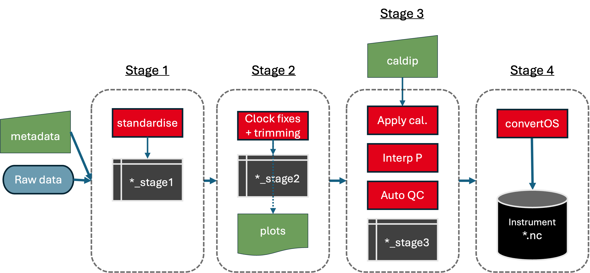
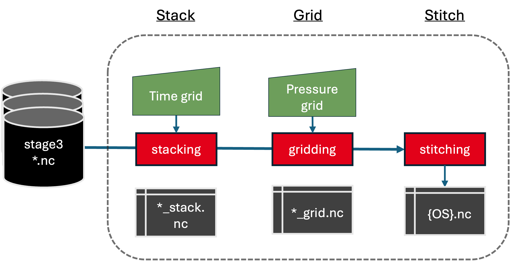

Processing stages
Processing runs at three levels: each instrument through stages 1–3, each
mooring into a stack and a grid, and each site (several deployments at one
place) into a Stack cat and a Grid cat. Every stage reads the files the one before
wrote and records what it did in the file’s history and attributes, so a file
says how it was made.
Each instrument

Stages 1–3 of one instrument, then the OceanSITES export.
Stage |
What it does |
Writes |
|---|---|---|
1 — read |
Reads the raw file (through |
|
2 — trim |
Applies the clock offset and drift, and keeps the record between
|
|
3 — QC |
Pressure for instruments without a sensor (from their neighbors), salinity, velocity rotated to east/north/up with the magnetic declination, and QC flags (gross range, spike, flat line, tilt, ADCP seabed and quality). |
|
The QC flags follow OceanSITES reference table 2; the thresholds used are written on
each *_qc variable. A calibration-dip correction at the front of stage 3 is
designed but not applied yet (Calibration — applying caldip corrections at the front of Stage 3).
Each mooring

The stack and the grid of one mooring.
Stack — every instrument on one time axis (default hourly), each step taking the instrument’s nearest sample within half a step; nothing is interpolated in time (
{mooring}_stack.nc, ontime × N_LEVELS). Every value is kept, with our flags and the originator’s beside it;stack: mask_flags(default 4) says which the pages hide and the grid leaves out. See Stack: one time axis.Grid — the stack interpolated linearly in pressure at each step, with no extrapolation (
{mooring}_grid.nc, ontime × pressure). Values the stack’smask_flagshides (default 4) are left out first. See Grid: pressure levels.
oceanarray run does stages 1–3, the stack, the grid and the report in one go.
Each site
Several deployments at one place are joined end to end into the Stack cat,
by depth, filling nothing across a turnaround, and gridded one mooring per
profile into the Grid cat (oceanarray concat). See
Concatenate Deployments.